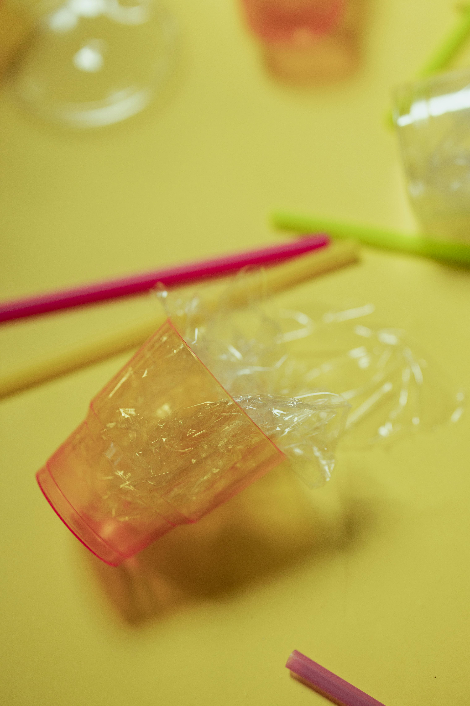
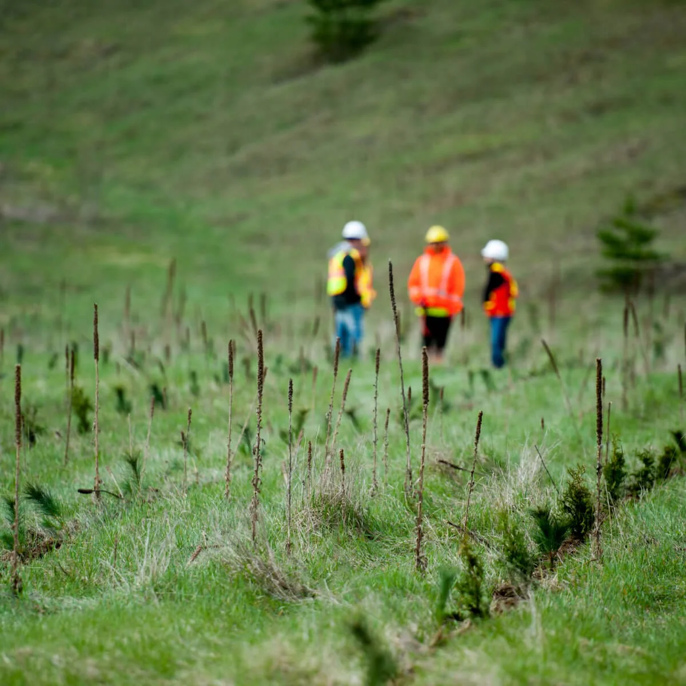
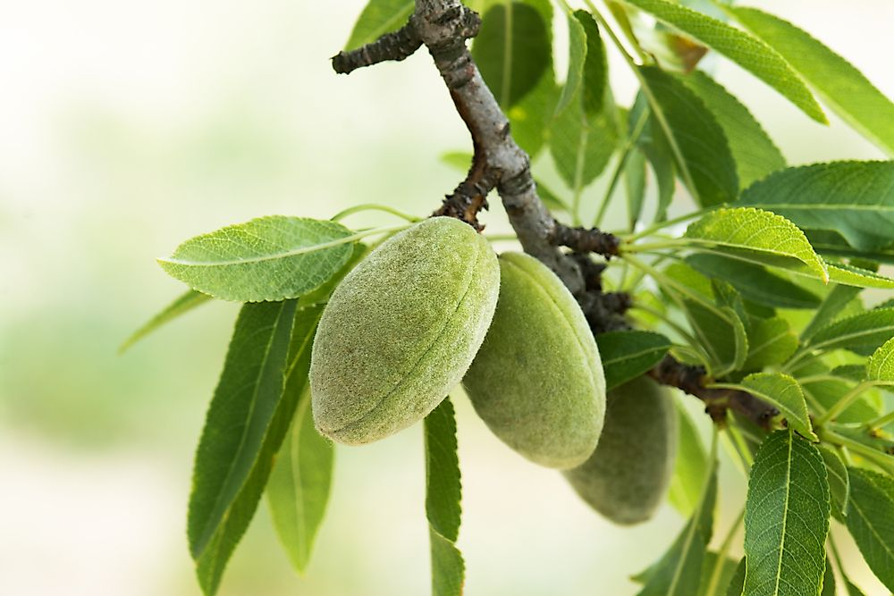

The Problem with Plastic
Microplastics are making their way into human brains at higher levels than in other vital organs, according to new findings. The study, published in Nature Medicine on Feb. 3, confirms that tiny plastic fragments are passing through the brain’s protective blood-brain barrier, potentially having previously unseen impact on health and cognitive function.

News on Microplastic Research and Reproductive Health
Fertility rates in males has been on a steady, observable decline over the last 50 years. Recent studies have pointed to microplastics as a possible culprit.

Reforestation Sucks
Everyone has seen at least one campaign to replant forests. "Save the trees!" they say. That's a load of bull. Most programs like this are built by the very companies cutting down the trees in the first place, and then do an awful job trying to replace them.

Artifical Droughts in the Age of AI
As utilities, state regulators, and local governments rush to accommodate a surge in data‑center construction driven by AI and cloud computing, water is emerging as a constraint that few permitting systems were designed to manage. The issue isn’t that data centers are unexpected.

Almonds are Evil and Made by the Devil
Almonds are an extremely heavy water consuming crop, and their cultivation poses several sustainability issues. The main problems with almonds from a sustainability standpoint are water and pesticide use. An enormous amount of water is needed in the production of almonds.
Almonds are Evil and Made by the Devil
Almonds are an extremely heavy water consuming crop, and their cultivation poses several sustainability issues. The main problems with almonds from a sustainability standpoint are water and pesticide use. An enormous amount of water is needed in the production of almonds.
Almonds are Evil and Made by the Devil
Almonds are an extremely heavy water consuming crop, and their cultivation poses several sustainability issues. The main problems with almonds from a sustainability standpoint are water and pesticide use. An enormous amount of water is needed in the production of almonds.